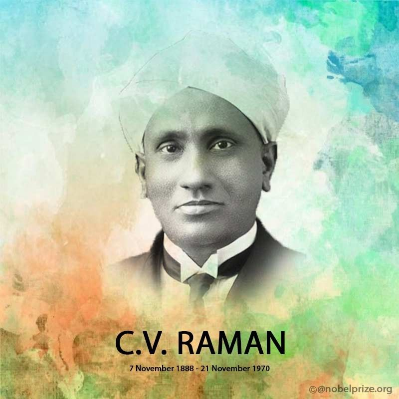

Tribute to Sir C. V. Raman
Sir Chandrasekhara Venkata Raman (1888–1970) was an eminent Indian physicist known for his groundbreaking work in the field of light scattering. His most significant discovery, the Raman effect, revolutionized our understanding of how light interacts with matter.
As a student, Raman demonstrated exceptional brilliance:
- At the age of 11, he passed his matriculation examination.
- By 13, he completed his 12th grade with a scholarship.
- He topped the bachelor's degree examination in physics from Presidency College at age 16.
His journey continued with remarkable achievements:
- Published his first research paper on diffraction of light while still a graduate student.
- Obtained a master's degree the following year.
- Joined the Indian Finance Service in Calcutta at age 19.
- Contributed significantly to acoustics and optics at the Indian Association for the Cultivation of Science (IACS).
Let us honor this visionary scientist who received the Nobel Prize in Physics in 1930 for his extraordinary contributions.